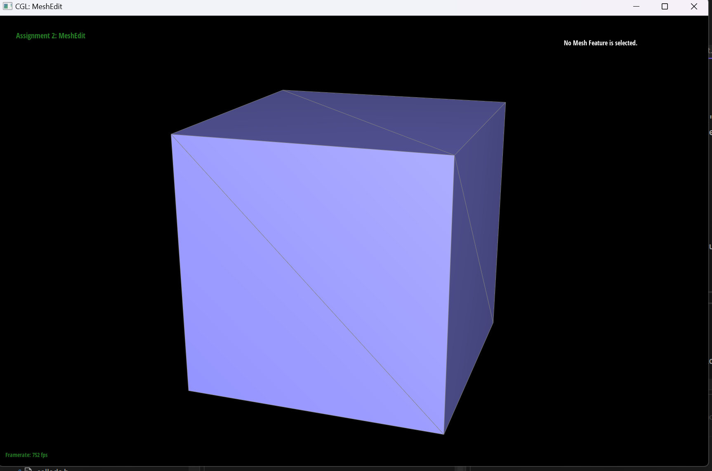
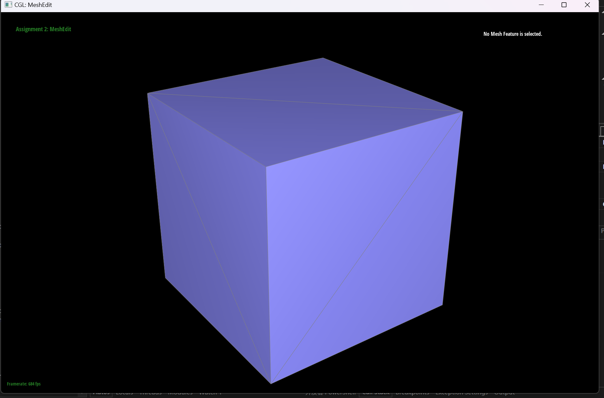

Overview
In this assignment, I have implemented algorithms to build beizier curves and beizier surfaces through linear interpolation, and manipulate with the halfedge mesh data structure to realize features including continuous normal vectors through the surface for smoother shading by interpolating vertex normal, edge flip and edge split, and Loop subdivision for mesh upsampling.
Section I: Bezier Curves and Surfaces
Part 1: Bezier Curves with 1D de Casteljau Subdivision
Briefly explain de Casteljau's algorithm and how you implemented it in order to evaluate Bezier curves.Casteljau's Algorithm considers the Bezier curve as the continuous collection of points with parameter t from 0 to 1. For a specific t, we perform a loop starting from the given n control points, evalute an interpolated point for every adjacent control points pair with the parameter t; we then evaluate deeper layers of interpolated point until we have only one point left, and that point is the point on the Bezier curve with parameter t. My actual coding follows directly with this description, by defining a single step of linear interpolation, we applied this to the original control points recursively to evaluate a point for a given t, and the final curve will be the collection of all t from 0 to 1.
Take a look at the provided .bzc files and create your own Bezier curve with 6 control points of your choosing. Use this Bezier curve for your screenshots below.
New file created as curve_writeup.bzc

Show screenshots of each step / level of the evaluation from the original control points down to the final evaluated point. Press E to step through. Toggle C to show the completed Bezier curve as well.
|
|
|
|
|
|
|
|
Show a screenshot of a slightly different Bezier curve by moving the original control points around and modifying the parameter \(t\) via mouse scrolling.
Modified the last point and setting a smaller t.
Part 2: Bezier Surfaces with Separable 1D de Casteljau
Briefly explain how de Casteljau algorithm extends to Bezier surfaces and how you implemented it in order to evaluate Bezier surfaces.For surfaces, instead of having one single parameter t corresponding to a location on the curve, we now have two parameters u, v to define a point on the surface. Suppose we have n*n control points, for this specific (u,v) point, we first compute n points on n bezier curves using each "row" of n control points with the parameter u using de Casteljau; we then use these n interpolated points to form a "columm" bezier curve and use de Castejau again with parameter v to find the actual (u,v) point on the surface. In my implementation, we first define a method that compute 1-d bezier curve as in Part1 and then iterate through the rows of control points to get the final surface by performing the 1-d method again.
Show a screenshot of bez/teapot.bez (not .dae) evaluated by your implementation.
Section II: Triangle Meshes and Half-Edge Data Structure
Part 3: Area-Weighted Vertex Normals
Briefly explain how you implemented the area-weighted vertex normals.For area-weighted vertex normals, the key step is the iterate through the neighbor vertices of the given vertex. Each neighbor triangle then constitutes pairs of adjacent neighbor vertices and the given vertex. Using these vertices we can compute two vectors and their cross product, which is the normal, and the area of the triangle is just one half the norm of the normal vector. Adding the normals together and nomalize the sum give us the area-weighted vertex normal.
Show screenshots of dae/teapot.dae (not .bez) comparing teapot shading with and without vertex normals. Use Q to toggle default flat shading and Phong shading.
Part 4: Edge Flip
Briefly explain how you implemented the edge flip operation and describe any interesting implementation / debugging tricks you have used.First, I stored all the pre-flip pointers of every face, edge, vertex, and halfedge of the two neighboring triangles. Then, performing the flip is basically reassigning all of these pointers. To ensure nothing is lost, I basically reassign every pointers even if they are not changed. I think the key to accurately reassign the pointers is to draw a diagram and name each object with names corresponding to your diagram, then reassining pointers is no different from reading off of the drawing of the diagram.
Show screenshots of the teapot before and after some edge flips.
Write about your eventful debugging journey, if you have experienced one.
My code runed well on my first shot.
Part 5: Edge Split
Briefly explain how you implemented the edge split operation and describe any interesting implementation / debugging tricks you have used.Similar to edge flip, I first stored all pre-split pointers of the two neighboring triangles. Then, I created a new vertex, two new faces (the orginal two faces are still used), three new edges, and six new halfedges. At last, I reassign all of the pointers by object types carefully. Similar to the part4, drawing a diagram and naming carefully is extremely helpful.
Show screenshots of a mesh before and after some edge splits.
Show screenshots of a mesh before and after a combination of both edge splits and edge flips.
Write about your eventful debugging journey, if you have experienced one.
With the help of drawing a diagram, I haven't experience a lot of debugging for this part. However, it was crucial to have the newly created vertex pointing to the edge being split, I have suffer due to this when working in part6.
If you have implemented support for boundary edges, show screenshots of your implementation properly handling split operations on boundary edges.
YOUR RESPONSE GOES HERE
Part 6: Loop Subdivision for Mesh Upsampling
Briefly explain how you implemented the loop subdivision and describe any interesting implementation / debugging tricks you have used.Firstly, I iterate through all original vertices of the mesh, for each iterated vertex, I compute its updated position using its position and its neighboring vertices' position. Then I iterate through all original edges to compute the position of newly created verticies using neighboring vertices. After calculating all updated position, I split all existing edges, mark those new vertices and edges. I then iterate through all of the edges again to check those that are new and connects an old and a new vertex and flip them. At the end, I update all their positions. To me, the most challenging part in this implementation is to prevent infite loop during edge split. I believed without carefully marking new and old edges will result in splitting splitted edges or new edges. The silly solution I did was to store a list of old vectors when I iterate through them in step 2(calculate updated position), which helps a lot.
Take some notes, as well as some screenshots, of your observations on how meshes behave after loop subdivision. What happens to sharp corners and edges? Can you reduce this effect by pre-splitting some edges?
In general, after loop subdivision, most edges and corner are smoothen out and become rounded. However, for the cube example, the corner vertex with degree 3 will remain a little pointy after loop subdivision, possibily because it has the lowest degree.


Load dae/cube.dae. Perform several iterations of loop subdivision on the cube. Notice that the cube becomes slightly asymmetric after repeated subdivisions. Can you pre-process the cube with edge flips and splits so that the cube subdivides symmetrically? Document these effects and explain why they occur. Also explain how your pre-processing helps alleviate the effects.
|

|
|

|
|
|
|
To make the cube symmetric, I flip a few edges of the original mesh so that the degree of each vertex is now either 6 or 3 and none of the adjacent vertex has the same degree. The result is that the degree of vertex is now symmetric. Previously, the assymetry is caused by assymetric degree distribution of the verticies so each vertex's position is updated assymetrically during upsampling. By pre-flipping a few edges and ensure symmetry of vertex degree, the position update will also be symmetric during upsampling, thus alleviated the effect.
|

|
|
|
|
|
|
|
If you have implemented any extra credit extensions, explain what you did and document how they work with screenshots.
YOUR RESPONSE GOES HERE
Part 7 (Optional, Possible Extra Credit)
Save your best polygon mesh as partsevenmodel.dae in your docs folder and show us a screenshot of the mesh in your write-up.YOUR RESPONSE GOES HERE
Include a series of screenshots showing your original mesh and your mesh after one and two rounds of subdivision. If you have used custom shaders, include screenshots of your mesh with those shaders applied as well.
YOUR RESPONSE GOES HERE
Describe what you have done to enhance your mesh beyond the simple humanoid mesh described in the tutorial.
YOUR RESPONSE GOES HERE